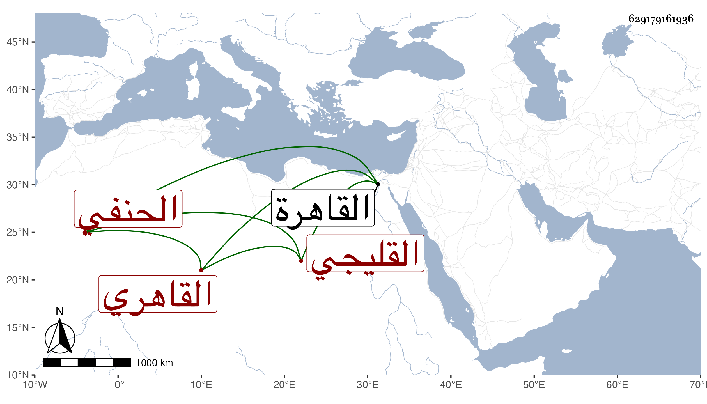

0902Sakhawi.DawLamic.ITO20230111-ara1.EIS1600.629179161936
Biography ID: 629179161936
أحمد بن عبد الله بن محمد بن عمر بن علي الشهاب القليجي القاهري الحنفي . ولد في ثامن عشري ذي القعدة سنة تسع وعشرين وثماني مائة وحفظ القرآن والكنز واشتغل على ابن الديري والشمني والزين قاسم وكذا حضر دروس ابن الهمام والعز عبد السلام البغدادي وأخذ أيضا عن البرهان الهندي والأبدي والتقي الحصني والشهاب الخواص وسمع على شيخنا وغيره وتعانى الأدب وتميز وشارك في الفضائل واستقر في موقعي الدست وناب في القضاء في سنة ثلاث وخمسين عن شيخه ابن الديري فمن بعده وقرأه عليه العلم الزواوي وقال لي أنه بارع فيه بدون تكلف فإنه أتقن أصله مع مؤلفه ولكنه مزري الهيئة غير متصون ، ومن نظمه إجابة لمن سأله إجازة قول القائل :
| هذا صباح وصبوح فما | عذرك في ترك صباح الصباح |
فقال :
| تمنع الحب وفقد الندى | وخوف واش ورقيب ولاح |
وله أيضا :
| لقد ضرني من كنت أرجو به نفعا | وقد ساءني أفعاله خلتها أفعى |
| إذا ما بدا لي ضاحكا زدت خيفة | وفي ضحك الأفعى لا تأمن اللسعا |
وقوله :
| عودتني منك الجميل تكرما | فعن المكارم لا أعود محيرا |
| فامنن به مجرى عوائد فضلكم | فالقطر أحسن ما يكون مكررا |
أحمد بن عبد الله بن محمد بن عيسى ولي الدين بن الجمال القاهري الشافعي الآتي أبوه وولده التقي محمد ويعرف بابن الزيتوني . ولد في صبيحة يوم الأحد سابع عشر ربيع الآخر سنة عشر وثمانمائة بالقاهرة ونشأ بها فحفظ القرآن عند الشمس بن الخص وبعضه عند صهره الفخر عثمان القمني وصلى به والعمدة والمنهاجين الفرعي والأصلي وألفية ابن مالك وعرض على الجمال والشمس البساطيين والجمال عبد الله السملاي المالكيين في آخرين ، وأخذ في الفقه عن أبيه والبرهان بن حجاج الأبناسي والجمال يوسف الأمشاطي والشرف السبكي والشمسين الحجازي والونائي في آخرين وعن أوليهما والحناوي والجمال بن هشام أخذ العربية ، وأملى عليه الحناوي على مقدمته فيها تعليقا عزم صاحب الترجمة على تبييضه ولازم ابن خضر والشنشي في الفقه والعربية والأصول وغيرها وكذا قرأ في الأصول والعربية على الولوي السنباطي وسمع عليه وعلى الحناوي والنور بن القيم وشيخنا ، وأكثر من التردد إليه وأسمع ولده معه عليه وحضر مجالس السعد بن الديري في التفسير وغيره وخطب بجامع الطواشي وغيره بل تصدر عقب والده ببعض الأماكن وتكسب بالشهادة وكان قد تدرب فيها بأبيه بحيث كان يزبره إذا اقتصر على عبارة واحدة فيما يتكرر له ويقول له تسلك مسلك لعوام في التقيد بالألفاظ ليكون ذلك حثا منه على تنوع العبارات في المعنى الواحد ، وقد حج وباشر النقابة عند المناوي ثم عند البدر البلقيني وراج أمره فيها وكذا جلس للتوقيع بباب الحسام بن حريز ثم أصيب بالفالج وانقطع مدة تزيد على عشر سنين مديما للتلاوة فيما بلغني إلى أن مات في ليلة السبت ثامن ربيع الثاني سنة تسعين ودفن من الغد بحوش سعيد السعداء وكان عاقلا متواضعا كثير التودد حسن الهيئة حلو الكلام بعيد الغور متميزا في صناعة الشروط مشاركا معروفا بصحبة بيت ابن الأشقر رحمه الله وإيانا .
